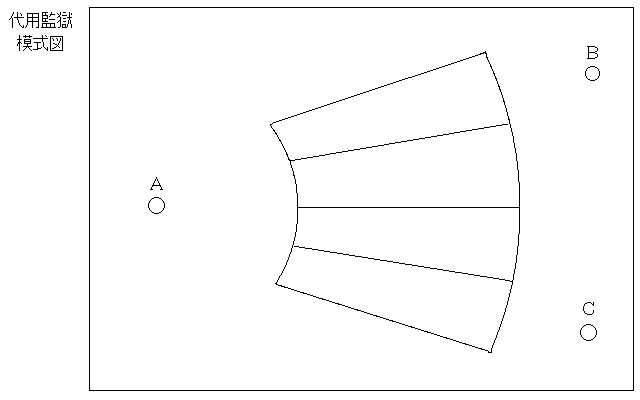

以下は、フィクションである。登場する人物、会社名、屋号その他一切は架空のものであり、実際のものとはまったく関係ない。
衛が殺された。地場衛が、である。死因は農薬による中毒死。農薬はワインに混入されていた。10月11日、被害者、地場衛は近所の酒屋に赤ワインを注文した。酒屋の店員、三平は地場のマンションまでワインを運び、地場に手渡した。地場はワインを台所に置いて、買い物に出かけようとマンションの一階まで降りたが、まだ冷蔵庫の中に食材が多く残っていることを思いだして引き返した。その後、夕食時にワインを飲んだところ、中毒症状をおこし、死亡した。知り合いの月野うさぎがしばらく地場を見かけないため不審に思い、地場のマンションを訪れたところ、地場の死亡が発見された。
マスコミはここぞとばかりにセンセーショナルな報道をした。有名私立大学生、毒ワインで死亡! 死の酔いは甘美だったか!? 警察も世論に過敏に反応し、犯人の逮捕に全力を注いだが、捜査線上には一人も現れず、事件は迷宮入りするかと思われた。警察はある意味で国家権力の象徴的な一面を持っている。強権を発動することによって、その存在を顕在ならしめたい。メンツがあるのだ。警察はメンツを保つために、なんとかして犯人を挙げたかった。ここから「見込み捜査」が始まる。
事件の捜査がすすむにつれて、ある事実が判明した。STICが、うさぎちゃん派であることがわかったのである。警察は、STICを犯人であると断定した。STICが地場衛を殺して、月野うさぎを自分に振り向かせようとしたのだと警察は考えた。早速警察は裁判官に逮捕状を請求。裁判官は、あっさりと逮捕状を警察に渡す。警察は「地場衛毒殺事件」の事件調査参考のため、と称してSTIC宅に訪問。その際、家の外では捜査員二人が車内で見張りをしていた。STIC宅においては、形通りの質疑応答にすませたが、夜は捜査員二人があつかましくもSTIC宅に泊まった。これが二晩続き、三日目にSTICは逮捕された。
ここで身柄拘束について話したい。警察はなぜ身柄を拘束するのだろうか。捜査のためか、裁判のためか。答えは後者である。身柄拘束、拘留は刑事司法作用的には、裁判所に確実に被疑者を連れて行くため、裁判の際に提出する証拠資料の隠滅を防ぐために行なうのである(司法的作用)。故に、拘置所というものが存在するのである。拘置所は刑務所ではない。刑務所は刑事裁判で有罪と判断された人が入るところで、拘置所は刑事裁判をこれから受ける被疑者が入るところである。裁判で有罪とされるまでは容疑者、つまり「犯人」ではないのである。これを無罪の推定といい、近代刑法の大原則である……のだが、実際にはマスコミは容疑者を呼び捨てにするし、警察の容疑者の扱いには人権の「じ」の字もない。身柄拘束は捜査の便宜のために行われているし(行政的作用)、拘置所にではなく「代用監獄」と呼ばれている警察の「ブタ箱」に入れられる。
A～Cは警察官である。扇形の内側と外側の円の部分はガラス張りである。トイレは各部屋(各ブタ箱)にあるが、ガラス張りなので外から全部見えてしまう。このフロアには窓は一切なく、明かりは蛍光燈のみである。故に長時間の拘留は時間の感覚が喪失する。まずSTICは逮捕後、警察署内において全裸検査を受ける。文字通り全裸で、ケツの穴まで調べられる。幸か不幸かSTICは野郎なので、マ○コの中までは調べられない。STICは弁護士を呼んで欲しいと頼むが「ふざけるな」と一喝される。STICは、もともと大きな音には敏感な上、耳元で怒鳴られたので頭がガンガン痛んだ。
警察が身柄拘束後、裁判官に報告及び許可をえるまでどのくらいの時間の猶予があるのだろうか。通常48時間である。最長72時間。アメリカの場合、弁護士に会わせるまでの時間は4時間以内(8時間だったかも)である。ドイツにいたっては 2時間である(4時間だったかも)。STICは、黙秘権を行使することにした。すでに相手方には知られているが、ここはこちらの覚悟を示すために自分の氏名さえも言わなかった。そこで警察側は代用監獄を移すことにした。恐喝と傷害で逮捕されたヤ○ザの二人が入っている部屋にSTICを移したのである。牢名主の原理により「おい、新入り、名前を名乗らんかい」の一言で、STICの黙秘権の行使は一部崩壊した。精神的なほころびが生じたのである。
取り調べが開始される。暗く狭い部屋で白熱球の明かりがSTICに向けられる。まぶしくて目が悪くなりそうである。取り調べの担当がSTICの耳元で「おまえがやったんだろ!」と言い続ける……もとい、怒鳴り続ける。基本的に日本の取り調べは一日15時間続く。STICは名前を言ってしまったとはいえ、黙秘権の行使を続けた。すると取り調べは、21時間におよんだ。食事は取り調べ室で行われた。STICはゆっくり食べるのが好きだが、そんなことは許されない。食事の間も耳元で怒鳴られ続ける。が、代用監獄に戻らなくてすむので(ずっと取り調べ室の中)、ガラス張りの中で警察官とヤ○ザに自分の性器、排便行為を見られなくてすむのは若干うれしい。もっとも警察官に見られるのは、どこでも同じだが。
STICは、自分が警察署に来てからどのくらいたったのかわからない。ずっと耳元で「おまえがやったんだろ」と怒鳴られ続けているのでノイローゼ気味である。代用監獄内では常に三人の警察官に排便を見られるし、なぜか警察官を「先生」と呼ばなくてはならない。気が狂いそうである。STICは、ここは異常だと思った。警察官は異常だと思った。裁判官は、もっとまともだろうと思った。ここは一旦「私がやりました」と自白して、とにかくこんな状況から早く抜けだしたい。裁判で否認すれば、きっと裁判官はわかってくれる。そうに違いない。STICは次の取り調べの際、自白した。逮捕後70時間のことだった。
代用監獄内において、排便行為がすべて見られると書いたが、これについて読者はどう思うだろうか。犯罪者なんだから人権はない。だからそんなことぐらいどうだっていうんだ!? と思うだろうか。ちょっと待って欲しい。刑事裁判で有罪とされるまでは容疑者であって犯人ではないと書いた。無罪の推定により、STICは、もし地場を殺していたとしても、まだ無罪なのである。ちなみに女性の場合、生理がある。生理用品の持ち込みなど当然許されるはずもなく、「先生、お願いします」と言って生理用品を用意してもらい、警察官の見ている前で交換を行なうのである。私が女性だったら発狂すると思う。静岡県では代用監獄内で、女性が警察官に強姦される事件がおきた。
取り調べ調書の作成。この事件は毒殺事件だが、仮に金属バットで滅多打ちにして殺したとしよう。個人的には衛にはそういう死に方がふさわしいと思うが、まあそれはどうでもよろしい。STICがもし衛を殺していないなら「自分がどうやって衛が殺したのかわからない」ことになる。この滑稽さがおわかりだろうか。
| 取り調べ官 | : | さあ、どうやって殺したんだ。答えろ。 |
| STIC | : | え～と……。 |
| 取り調べ官 | : | ずいぶんとひでえ殺し方をしたじゃねえか。身体中が傷だらけだったぜ。 |
| STIC | : | ああ、えっとナイフで刺しました。 |
| 取り調べ官 | : | バカ野郎。ナイフであんな傷になるか。内出血がひどくて、打ち身だらけだったんだぜ。 |
| STIC | : | ああ、えっとモンキレンチで殴ったんです。 |
| 取り調べ官 | : | そうか……モンキレンチは持って行ったのか、それとも……。 |
| STIC | : | (持って行ったって言ったら、準備して行ったということになって罪が重くなるかもしれないな)。いえ、あの家にあったやつで。 |
| 取り調べ官 | : | バカ野郎。あの家にはモンキレンチはねえんだよ。バットじゃねえのか? |
| STIC | : | ああ、はい。それです。金属バットです。 |
これらは、すべて記録される。しかし、裁判官に提出される調書は、
「10月11日、私、STICはマンションの屋上からロープを使って地場衛の部屋のベランダに降り立ち、鍵を開けて台所に侵入し、置いてあったワインのふたをコルク栓抜きを使って開け、農薬を混入して再びロープを使って屋上へ戻りました」
という理路整然とした「作文」になってしまう(書面審理主義)。当然、この作文は取り調べ官が行ない、STICは事実上署名させられる。拒否すれば、再び狂気の取り調べと尋問が開始される。上の例がバット殴打で、再び毒殺事件になっているので、ややこしくて申し訳ないが、ロープを使って云々が取り調べ官との上の例のようなやりとりで「出来上がって」いくであろうことは想像に難くない。
公判が開始された。一審の東京地方裁判所では無罪判決。検察は、ただちに控訴。二審の東京高等裁判所で、弁護士側は問う。地場のマンションは表通りに面しているのだが(東京の麻布である!)、屋上からロープを伝って降りていながら目撃者が一人もいない。地場がマンションの一階に降りて、戻ってくる間は数分(2～3分)程度。その間にコルク栓抜きでワインの栓を抜いて農薬を入れて再び栓をしめて、さらにロープを伝って屋上に戻れるのか。しかし、裁判官は名張事件のときと同じように「必ずしも不可能とは言えない」と答える。検察側が言う。犯行時間は、15:00～15:05。14:25～15:45の間、STICは教室を抜け出した。弁護士側が言う。その時間には、STICは「少年法」の講義に出席していた。同じクラスの友人が、それを証明できる。検察側が反論。友人H・友人O・友人SはすべてSTICより前に座っていたため、確認は不可能である。
地場衛のマンションには常時、管理人がいる。勿論24時間すべてではないが、地場衛が一階に降りたところで、マンションの管理人が衛を見ている。すぐ戻るのも確認している。しかし警察は管理人を参考人として事情徴収した際、無理矢理五分間へ延長させる。管理人は衛を見たとき、まさかこれから衛が死んでしまうなどとは普通は少しも思わない。故に時間など、たいして覚えていない。そこで、以下のやり取り。
「覚えていないということは、もしかしたら五分ぐらい時間がたってしまっていたかもしれないでしょう?」
「いえ、でも、そんなには……」
「『でも』って、あなた『たいして覚えていない』んでしょう? 絶対に五分なかったといえるんですか?」
「いえ……」
「五分たっていたかもしれない……そうですね?」
「……はい」
そしてこれが前述の通り、以下の作文に変身する。
「10月11日、私、マンション管理人○○は地場衛が外出することを確認し、五分後に自室へ戻ることを合わせて確認しました」
裁判官と検察は、概して仲がよすぎる。週刊誌なら、「癒着」と書くだろう。検察の提出する矛盾かつ無理ある証拠に対しても、裁判官は「必ずしも不可能とは言えない」として認めてしまう。弁護士は証人召喚(マンション管理人)を求めるが、「必要なし」と軽く一蹴されてしまった。STICがマンションの屋上に上がるためには、当然入口を通過せねばならないが、管理人は見ていないと言っているのである! 管理人は召喚されなかったため、その事実は法廷で採り上げられず、すなわち存在しないものと扱われる。
裁判官は、検察側と被告側(弁護側)のどちらの言い分に合理性があるか(正しいか否か、ではない)をジャッジ(判定)する人物(役割)にすぎない。人格判断も、しない。「こいつは凶悪な奴だから死刑にした方がいい」ではないのだ。法廷で採り上げられた「事実」(と双方が主張する"言い分")についてのみ、判断をくだす。管理人が召喚されなかったことが、STICにとって不利になったか有利になったかは、わざわざ書くまでもない。
二審の東京高等裁判所では、逆転有罪。死刑判決。STICは当然上告しようとしたが、憲法判断を要する懸案か、刑事裁判において被告が上告する場合は新たに無罪たる証拠が発見されないと、上告は出来ない。再審の道は閉ざされたわけではないが、判決は確定した。STICと弁護士はなんとか再審の可能性を探るが、六ヶ月後に刑務所長からSTICに通告がある。もしものことがあったら誰に知らせたいのか。遺品はどうするのか。誰かに渡す意思があるのか。渡すとしたら誰に渡すのか。どこに埋葬して欲しいのか。一週間以内に書面をもって解答せよ、とのこと。死刑執行が近いのか……。STICの番号は、10281番である(刑務所内では、すべて番号で呼ばれる)。朝、「10281番」だけで終われば、その日はまだ生きていられる。「10281番、出なさい」と言われた日が、人生最後の日である。
普段「我々」は、自分達は「犯罪」とは関係ないと思っている。犯罪者と我々の間には、目には見えないが明らかに何か区別するものが存在して双方をわけている。彼等は我々とは別人、別な人間なのだ。そう信じこんでいる。だが、はたしてそうなのだろうか。いや、ちょっと待って欲しい。すぐに結論を出す必要はない。人間は「種」ではなく「社会システム」である。システムには必らず排除するシステムというものが内包されている。その社会においては、必らず社会のどこか一部が異端とされるのである。そのことのよしあしは問わないとしても、それ(異端)を排除していくとキリがない。
社会においては、必ず一部が異端とされてしまう。つまり人間の行為の一部が、必ず「犯罪」と定義されてしまうということである。故に「オレは犯罪とは関係ない」とは誰も断言できない。実際には不可能なことだが、文字通り犯罪者を完全に排除すると、今度は排除が完了した集団内で再び一部が異端(犯罪)と定義され、またそれが排除される。そのうちキセル(不正乗車)で死刑になる可能性もあり、人に「バカたれ」と言っただけで無期懲役になるかもしれない。
犯罪は法律(刑法)によって定義される。これを罪刑法定主義という。新たに犯罪が定義されると、なぜ定義されたかといえば、その行為が犯罪であると認識したからであり、当然その行為をした対象者は逮捕される。新たに犯罪が定義されれば行政側(警察を当然含む)がそれを適用したいと考えるのは至極当然である。個人的に、それをどう思うかは別として、実際にはそういうものである。死刑の適用は、規範の具体例の表明である。例えば、タバコの吸い殻の投げ捨てを死刑にすることは規範の変更を意味する。タバコの投げ捨てで死刑ならば、単なる個別的な刑の適用にとどまらず、痰の吐き捨てなら無期懲役が適用されるというようになる。犯罪の重さの程度に応じた刑罰が課せられるべきであり、これも近代刑法の原則である。
民主主義とは多数派(マジョリティー)の利益を守るシステムである。しかし一旦少数派(マイノリティー)に属してしまうと恩恵が受けられなくなる。一見当然のようだが、多数派が導き出した結論は少数派の主張を尊重したものでなければならないことは、建前といえども民主主義の基本原則(原理)である。少数派、つまり異端を排除することはこのことからも民主主義に反する。民主主義と人間主義(ヒューマニズム)を勘違いしているのならば、なおさら「犯罪者は死刑だ」と言えるはずがないのである。
# 1995/10/11
# 2013/01/20 Update